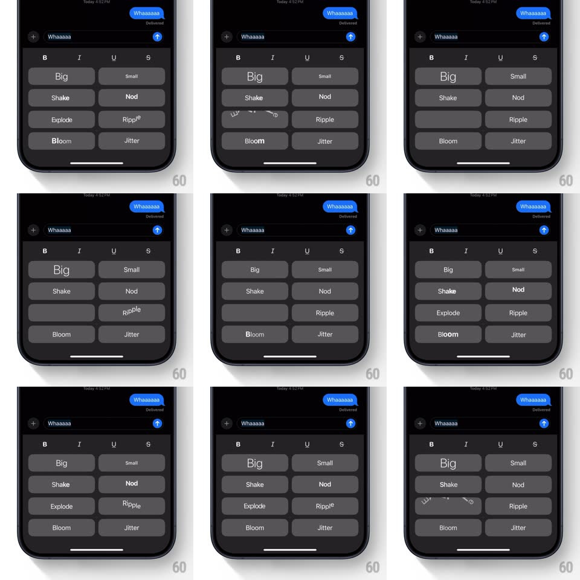

Media
Frame-by-frame

Rebuild this interaction 1:1: Apple Messages' Text Effects picker - a 2-column grid of effect buttons (Big, Small, Shake, Nod, Explode, Ripple, Bloom, Jitter) where tapping a button plays its typographic animation live on that button's own label.

Rebuild this interaction 1:1: Apple Messages' Text Effects picker - a 2-column grid of effect buttons (Big, Small, Shake, Nod, Explode, Ripple, Bloom, Jitter) where tapping a button plays its typographic animation live on that button's own label. ## Integration Integration: stack-agnostic spec - springs given as stiffness/damping, timed motions as duration + curve; map every value to your framework and animation library of choice. ## Scene Messages conversation view (dark): a sent blue bubble "Whaaaaa" with Delivered, the compose field with the same draft text, a formatting row (B I U S), and below it the effects grid - two columns of rounded dark-gray buttons: Big, Small, Shake, Nod, Explode, Ripple, Bloom, Jitter. ## Motion spec Pattern: per-button live preview of named text effects. - Tapping an effect button runs its animation on the button's label: Big scales glyphs up 1 -> 1.6 and back (staggered per letter, ~600ms); Small shrinks 1 -> 0.6 and back; Shake oscillates translateX +/-6px with slight rotation (~4 shakes, 500ms); Nod rotates letters +/-12deg sequentially; Explode scatters letters outward with fade (~500ms); Ripple runs a scale wave letter by letter (1 -> 1.3, ~90ms per letter); Bloom blurs letters out and back (blur 0 -> 8px); Jitter vibrates each glyph with small random offsets (~2px, 500ms). - Only the tapped button animates; the grid, compose field, and conversation stay static. - The button shows a pressed state (darken ~15%) on touch-down, independent of the effect. ## Calibration - Each effect must be recognizable from its name alone - amplitude matters more than speed. - One effect at a time; tapping during a run restarts that button's animation. ## Reduced motion Tapping a button flashes the label (opacity pulse, 200ms) instead of running the effect. ## Don't miss - The animation plays on the picker button itself - the message bubble does not preview it here. - The formatting row (B I U S) sits above the grid and is not part of the effects.